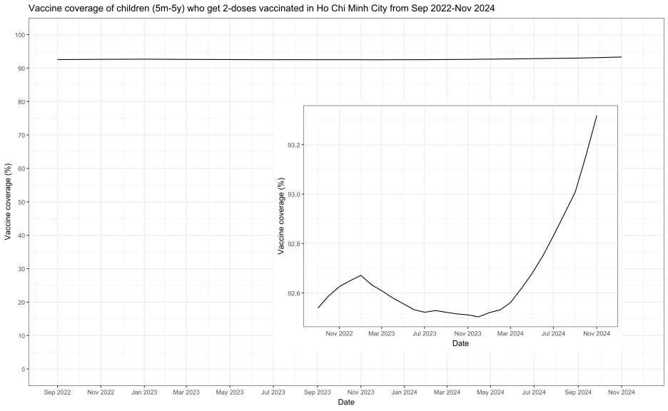
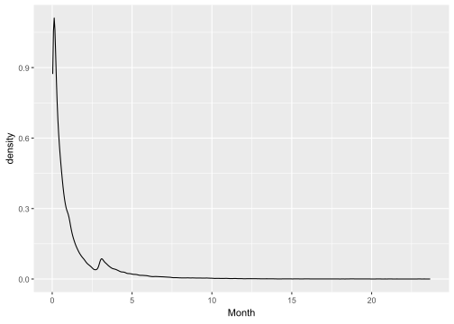

Code
library(tidyverse)
library(lubridate)
library(janitor)
library(stringi)
library(patchwork)
invisible(Sys.setlocale("LC_TIME", "English"))
df_raw <- readRDS("D:/OUCRU/assigned github/vac_coverage/data/vaxreg_hcmc_measles.rds")library(tidyverse)
library(lubridate)
library(janitor)
library(stringi)
library(patchwork)
invisible(Sys.setlocale("LC_TIME", "English"))
df_raw <- readRDS("D:/OUCRU/assigned github/vac_coverage/data/vaxreg_hcmc_measles.rds")## data cleaning
df <- df_raw %>% na.omit() %>%
subset(date_m1 > dob &
date_m2 > dob &
date_m1 < date_m2 &
year(date_m2) <= 2024 &
year(date_m1) >= min(year(df_raw$dob))) Vaccine shortage public started in May 2022 source
district <- unique(df$district)
week <- seq(as.Date("2022-05-01"),as.Date("2024-07-01"),by = "month")
dttlv <- df[,c("dob","district","date_m1","date_m2")]
out_timely <- data.frame()
for (k in 1:length(district)){
td <- subset(dttlv, district == district[k])
for (i in 1:length(week)){
td$lackd <- week[i]
td$ageuntil <- decimal_date(td$lackd) - decimal_date(td$dob)
## subset children aged from 9 months to 9 months 2 weeks at chosen time
slec <- td[td$ageuntil >= 0.75 & td$ageuntil <= 0.75 + 0.5*(1/12),]
slec$agevac <- decimal_date(slec$date_m1) - decimal_date(slec$dob)
slec$vac_on_date1 <- ifelse(slec$agevac < slec$ageuntil + 1/12,1,0)
slec$vac_on_date1 <- replace(slec$vac_on_date, is.na(slec$vac_on_date1),0)
re <- slec %>% group_by(vac_on_date1) %>% count()
if(nrow(re) == 1){
re[2,] <- re[1,]
re[1,1] <- 0
re[1,2] <- 0
}
cus <- data.frame(district = district[k],
date = week[i],
per = as.numeric(re[2,2])/(as.numeric(re[2,2])+as.numeric(re[1,2])))
out_timely <- rbind(out_timely,cus)
}
}date_compute <- seq(as.Date("2022-09-01"),as.Date("2024-11-20"),by = "weeks")
## second dose
out_fn <- data.frame()
for (i in 1:length(date_compute)){
cov <- df %>%
mutate(
age = decimal_date(date_compute[i]) - decimal_date(dob),
is_m2 = if_else(date_m2 <= date_compute[i], 1, 0)) %>%
filter(age >= 1, age <= 5) %>%
summarise(m2 = sum(is_m2, na.rm = T), n = n(), cov = m2/n)
cov_2w <- df %>%
mutate(
age = decimal_date(date_compute[i]) - decimal_date(dob),
is_m2 = if_else(date_m2 <= date_compute[i] %m-% weeks(2), 1, 0)) %>%
filter(age >= 1 + 0.5/12, age <= 5 + 0.5/12) %>%
summarise(m2 = sum(is_m2, na.rm = T), n = n(), cov = m2/n)
out <- data.frame(date = as.Date(date_compute[i]),
cov = as.numeric(cov$cov),
cov_2w = as.numeric(cov_2w$cov))
out_fn <- rbind(out_fn,out)
}
## first dose
out_fn1 <- data.frame()
for (i in 1:length(date_compute)){
cova <- df %>%
mutate(
age = decimal_date(date_compute[i]) - decimal_date(dob),
is_m1 = if_else(date_m1 <= date_compute[i], 1, 0)) %>%
filter(age >= 0.75, age <= 5) %>%
summarise(m1 = sum(is_m1, na.rm = T), n = n(), cov = m1/n)
cov_2wa <- df %>%
mutate(
age = decimal_date(date_compute[i]) - decimal_date(dob),
is_m1 = if_else(date_m1 <= date_compute[i] %m-% weeks(2), 1, 0)) %>%
filter(age >= 0.75 + 0.5/12, age <= 5 + 0.5/12) %>%
summarise(m1 = sum(is_m1, na.rm = T), n = n(), cov = m1/n)
outa <- data.frame(date = as.Date(date_compute[i]),
cov = as.numeric(cova$cov),
cov_2w = as.numeric(cov_2wa$cov))
out_fn1 <- rbind(out_fn1,outa)
}vac_co <- ggplot()+
geom_line(data = out_fn,aes(x = date,y = cov*100,color="2"))+
geom_line(data = out_fn1,aes(x = date,y = cov*100,color="1"))+
scale_y_continuous(limits = c(0, 100), breaks = seq(0,100,by = 10)) +
labs(x = "Date",y = "Vaccine coverage (%)")+
scale_x_date(breaks = "4 month",
date_labels= "%b %Y",
limits = c(as.Date("2022-09-01"),as.Date("2024-11-20")))+
theme(axis.text.x = element_text(angle = 45,size = 8,
hjust=1))+
scale_color_manual(name="Dose", values=c("1"="red", "2"="blue"))+
theme_bw()
vac_co2w <-ggplot()+
geom_line(data = out_fn,aes(x = date,y = cov_2w*100,color="2"))+
geom_line(data = out_fn1,aes(x = date,y = cov_2w*100,color="1"))+
scale_y_continuous(limits = c(0, 100), breaks = seq(0,100,by = 10)) +
labs(x = "Date",y = "Vaccine coverage with 2-week hypothesis (%)")+
scale_x_date(breaks = "4 month",
date_labels= "%b %Y",
limits = c(as.Date("2022-09-01"),as.Date("2024-11-20")))+
theme(axis.text.x = element_text(angle = 45,size = 8,
hjust=1))+
scale_color_manual(name="Dose", values=c("1"="red", "2"="blue"))+
theme_bw()
vac_co | vac_co2w
dis <- unique(df$district)
out_d <- data.frame()
out_d1 <- data.frame()
for (k in 1:length(dis)){
dfd <- df %>% filter(district == dis[k])
for (i in 1:length(date_compute)){
cov <- dfd %>%
mutate(
age = decimal_date(date_compute[i]) - decimal_date(dob),
is_m2 = if_else(date_m2 <= date_compute[i], 1, 0)) %>%
filter(age >= 1, age <= 5) %>%
summarise(m2 = sum(is_m2, na.rm = T), n = n(), cov = m2/n)
cov_2w <- dfd %>%
mutate(
age = decimal_date(date_compute[i]) - decimal_date(dob),
is_m2 = if_else(date_m2 <= date_compute[i] %m-% weeks(2), 1, 0)) %>%
filter(age >= 1 + 0.5/12, age <= 5 + 0.5/12) %>%
summarise(m2 = sum(is_m2, na.rm = T), n = n(), cov = m2/n)
out_d1 <- data.frame(district = as.character(dis[k]),
date = as.Date(date_compute[i]),
cov = as.numeric(cov$cov),
cov_2w = as.numeric(cov_2w$cov))
out_d <- rbind(out_d,out_d1)
}
}meancv <- out_d %>%
group_by(district) %>%
summarise(mean = mean(cov))
sorted <- meancv[order(-meancv$mean),]# IPSUM
df <- readRDS("D:/OUCRU/IPSUM/ipumsi_hcmc_2019.rds")
df$qh <- case_when(
df$GEO2_VN == 704079760 ~ "Quận 1",
df$GEO2_VN == 704079761 ~ "Quận 12",
df$GEO2_VN == 704079762 ~ "Thủ Đức",
df$GEO2_VN == 704079763 ~ "Thủ Đức",
df$GEO2_VN == 704079764 ~ "Gò Vấp",
df$GEO2_VN == 704079765 ~ "Bình Thạnh",
df$GEO2_VN == 704079766 ~ "Tân Bình",
df$GEO2_VN == 704079767 ~ "Tân Phú",
df$GEO2_VN == 704079768 ~ "Phú Nhuận",
df$GEO2_VN == 704079769 ~ "Thủ Đức",
df$GEO2_VN == 704079770 ~ "Quận 3",
df$GEO2_VN == 704079771 ~ "Quận 10",
df$GEO2_VN == 704079772 ~ "Quận 11",
df$GEO2_VN == 704079773 ~ "Quận 4",
df$GEO2_VN == 704079774 ~ "Quận 5",
df$GEO2_VN == 704079775 ~ "Quận 6",
df$GEO2_VN == 704079776 ~ "Quận 8",
df$GEO2_VN == 704079777 ~ "Bình Tân",
df$GEO2_VN == 704079778 ~ "Quận 7",
df$GEO2_VN == 704079783 ~ "Củ Chi",
df$GEO2_VN == 704079784 ~ "Hóc Môn",
df$GEO2_VN == 704079785 ~ "Bình Chánh",
df$GEO2_VN == 704079786 ~ "Nhà Bè",
df$GEO2_VN == 704079787 ~ "Cần Giờ") %>%
stri_trans_general("latin-ascii") %>%
str_remove_all("Quan") %>%
trimws(which = "both")
df$agr = df$AGE2 %>% as.factor()
levels(df$agr) = c("0-4", "5-9", "10-14","15-19",
"20-24","25-29","30-34","35-39",
"40-44","45-49","50-54","55-59",
"60-64","65-69","70-74","75-79",
"80-84","85+")
df$sex <- ifelse(df$SEX == 1,"male","female")
agepyr <- df[,c("agr","sex","qh")] %>% group_by(qh,agr,sex) %>% count()
agepyr <- agepyr %>% mutate(
population2 = case_when(
sex == "female" ~ -n,
TRUE ~ n
)) %>% as.data.frame()
pop_range <- range(agepyr$population2 %>% na.omit())
pop_range_breaks <- pretty(pop_range, n = 6)
pop_range_breaks1 <- pretty(pop_range*0.085, n = 10)hcm19 <- readRDS("D:/OUCRU/hfmd/data/census2019.rds") %>%
filter(province == "Thành phố Hồ Chí Minh")
hcm19$district <- hcm19$district %>%
str_remove_all("Quận|Huyện") %>%
str_replace_all(
c("\\b2\\b|\\b9\\b" = "Thủ Đức")) %>%
stri_trans_general("latin-ascii") %>%
trimws(which = "both")
hcm19$age2 <- as.numeric(word(hcm19$age, 1))
hcm19$agr <- as.factor(cut(as.numeric(hcm19$age2),
c(0,4, 9, 14,19,24,29,34,39,44,49,54,59,64,69,74,79,84,Inf),
right=TRUE ))
levels(hcm19$agr) = c("0-4", "5-9", "10-14","15-19",
"20-24","25-29","30-34","35-39",
"40-44","45-49","50-54","55-59",
"60-64","65-69","70-74","75-79",
"80-84","85+")
popdis <- hcm19 %>% group_by(district) %>%
summarise(n = sum(n))
district <- popdis$district
## function to scale per
scale_per <- function(data){
ou <- data.frame()
for (i in 1:22){
oo <- data %>% filter(qh == district[i]) %>%
mutate(pop = rep(as.numeric(popdis$n[popdis$district == district[i]])),
per = (n/pop)*100)
ou <- rbind(ou,oo)
}
return(ou)
}## education
df$edu <- case_when(
df$EDATTAIN == 0 ~ "NIU",
df$EDATTAIN == 1 ~ "Less than primary completed",
df$EDATTAIN == 2 ~ "Primary completed",
df$EDATTAIN == 3 ~ "Secondary completed",
df$EDATTAIN == 4 ~ "University completed") %>%
factor(levels = c("NIU",
"Less than primary completed",
"Primary completed",
"Secondary completed",
"University completed")
)
hcm_edu <- df %>% group_by(qh,edu) %>% count()
## urban status
df$urban <- ifelse(df$URBAN == 2,"Urban","Rural")
urban <- df %>% group_by(qh,urban) %>% count()
## number of children under 5 years old
hcm_chil5 <- df %>% group_by(qh,NCHLT5) %>% count()
## religion
df$reli <- case_when(
df$RELIGION == 1 ~ "No religion",
df$RELIGION == 2 ~ "Buddhist",
df$RELIGION == 5 ~ "Muslim",
df$RELIGION == 6 ~ "Christian",
df$RELIGION == 7 ~ "Other")
hcm_reli <- df %>% group_by(qh,reli) %>% count()
## ownership
df$owner <- case_when(
df$OWNERSHIPD == 0 ~ "NIU",
df$OWNERSHIPD == 100 ~ "Owned",
df$OWNERSHIPD == 214 ~ "Renting, private",
df$OWNERSHIPD == 211 ~ "Renting, government",
df$OWNERSHIPD == 217 ~ "Renting, collective",
df$OWNERSHIPD == 290 ~ "Not owned, other")
owner <- df %>% group_by(qh,owner) %>% count() ## plot
vac_cov <- out_d %>% mutate(dis = factor(district,
levels = as.character(sorted$district))) %>%
ggplot()+
geom_line(aes(x = date,y = cov*100,color="2"))+
scale_y_continuous(limits = c(0, 100), breaks = seq(0,100,by = 10)) +
labs(x = "Date",y = "Vaccine coverage (%)")+
scale_x_date(breaks = "4 months",
date_labels= "%b %Y",
limits = c(as.Date("2022-09-01"),as.Date("2024-11-20")))+
facet_wrap(vars(dis),ncol = 1)+
scale_color_manual(name="Dose", values=c("1"="red", "2"="blue"))+
theme_bw()+
theme(axis.text.x = element_text(angle = 45,size = 8,hjust=1),
axis.text.y = element_text(size = 6))
time_vac <- out_timely %>% mutate(dis = factor(district, levels = as.character(sorted$district))) %>%
ggplot(aes(x = date,y = per*100))+
geom_line()+
# scale_y_continuous(limits = c(50, 100), breaks = seq(50,100,by = 10)) +
labs(x = "Date",y = "Timely vaccination percentage (%)")+
scale_x_date(breaks = "2 months",
date_labels= "%b %Y")+
facet_wrap(vars(dis),ncol = 1)+
theme_bw()+
theme(axis.text.x = element_text(angle = 45,size = 8,
hjust=1))
# age_prm <- agepyr %>% mutate(dis = factor(qh,
# levels = as.character(sorted$district))) %>%
# ggplot() +
# geom_col(aes(x = population2,
# y = agr,
# fill = sex)) +
# # geom_col(aes(x = population2.y,
# # y = agr,
# # fill = sex),alpha=0.5) +
# scale_x_continuous(breaks = pop_range_breaks1,
# labels = abs(pop_range_breaks1))+
# facet_wrap(vars(dis),
# # scales = "free",
# ncol = 1)+
# theme_light()+
# labs(x = "Population",y = "Age group")+
# theme(axis.text.x = element_text(size = 4.5),
# axis.text.y = element_text(size = 4))
edu <- scale_per(hcm_edu) %>%
mutate(dis = factor(qh,
levels = as.character(sorted$district))) %>%
ggplot() +
geom_col(aes(x = per,
y = edu)) +
facet_wrap(vars(dis),
# scales = "free",
ncol = 1)+
labs(x = "Percentage of total population(%)",
y = "Education")+
theme_light()+
theme(axis.text.x = element_text(size = 15),
axis.text.y = element_text(size = 15))
urb <- scale_per(urban) %>%
mutate(dis = factor(qh,
levels = as.character(sorted$district))) %>%
ggplot() +
geom_col(aes(x = per,
y = urban)) +
facet_wrap(vars(dis),
# scales = "free",
ncol = 1)+
labs(x = "Percentage of total population(%)",
y = "Urban-rural status")+
theme_light()+
theme(axis.text.x = element_text(size = 15),
axis.text.y = element_text(size = 15))
child5 <- scale_per(hcm_chil5) %>%
mutate(dis = factor(qh,
levels = as.character(sorted$district))) %>%
# filter(NCHLT5 != 0) %>%
ggplot() +
geom_col(aes(x = per,
y = as.factor(NCHLT5))) +
facet_wrap(vars(dis),
# scales = "free",
ncol = 1)+
labs(x = "Percentage of total population(%)",
y = "Number of own children under age 5 in household")+
theme_light()+
theme(axis.text.x = element_text(size = 15),
axis.text.y = element_text(size = 15))
reli <- scale_per(hcm_reli) %>%
mutate(dis = factor(qh,
levels = as.character(sorted$district))) %>%
ggplot() +
geom_col(aes(x = per,
y = as.factor(reli))) +
facet_wrap(vars(dis),
# scales = "free",
ncol = 1)+
labs(x = "Percentage of total population(%)",
y = "Religion")+
theme_light()+
theme(axis.text.x = element_text(size = 15),
axis.text.y = element_text(size = 15)) 
Call:
lm(formula = mean ~ edu + urban + reli + owner + NCHLT5, data = demo_cov)
Coefficients:
(Intercept) eduLess than primary completed
0.8520387 0.0003210
eduPrimary completed eduSecondary completed
-0.0003535 0.0004169
eduUniversity completed urbanUrban
0.0011054 0.0032846
reliChristian reliMuslim
-0.0025493 0.0007573
reliNo religion reliOther
-0.0013317 0.0071242
ownerNot owned, other ownerOwned
-0.0035805 -0.0044847
ownerRenting, collective ownerRenting, government
-0.0042068 -0.0069416
ownerRenting, private NCHLT5
-0.0059307 -0.0004462 library(stringi)
library(lubridate)
dttlv$date_m1_ontime <- dttlv$dob %m+% months(9)
dttlv$delay <- interval(dttlv$date_m1_ontime,dttlv$date_m1) / months(1)dttlv %>% na.omit() %>%
filter(delay > 0 & date_m1_ontime >= as.Date("2022-05-01")
& date_m1_ontime <= as.Date("2023-12-31")) %>%
ggplot(aes(x=delay)) +
geom_density()+
labs(x = "Month")
meandl <- dttlv %>% na.omit() %>%
filter(delay > 0 & date_m1_ontime >= as.Date("2022-05-01")
& date_m1_ontime <= as.Date("2023-12-31")) %>%
group_by(district) %>%
summarise(median = median(delay,na.rm = T))
sorted <- meandl[order(-meandl$median),]vac_dl <- dttlv %>%
mutate(dis = factor(district,
levels = as.character(sorted$district))) %>%
filter(delay > 0 & date_m1_ontime >= as.Date("2022-05-01")
& date_m1_ontime <= as.Date("2023-12-31")) %>%
ggplot(aes(x=delay)) +
geom_density()+
labs(x = "Month")+
xlim(0,5)+
facet_wrap(vars(dis),ncol = 1)+
theme_bw()+
theme(axis.text.x = element_text(angle = 45,size = 8,
hjust=1))
##
month <- seq(as.Date("2022-05-01"),as.Date("2024-01-01"),by = "month")
dis2 <- dttlv$district %>% unique()
uot <- data.frame()
uot2 <- data.frame()
for (k in 1:length(dis2)){
dtd <- dttlv %>% filter(district == dis2[k])
for (i in 1:(length(month)-1)){
emon <- dtd %>% na.omit() %>%
filter(date_m1_ontime >= month[i] &
date_m1_ontime <= month[i+1] &
delay > 0)
uot2 <- data.frame(district = dis2[k],
month = month[i],
del = median(emon$delay))
uot <- rbind(uot,uot2)
}
}
month_delay <- uot %>%
mutate(dis = factor(district,
levels = as.character(sorted$district))) %>%
ggplot(aes(x = month,y=del)) +
geom_bar(stat = "identity")+
labs(x = "Month", y = "The median of delayed month")+
facet_wrap(vars(dis),ncol = 1)+
scale_x_date(breaks = "2 months",
date_labels= "%b %Y")+
theme_bw()+
theme(axis.text.x = element_text(angle = 45,size = 8,
hjust=1))
##
edu <- scale_per(hcm_edu) %>%
mutate(dis = factor(qh,
levels = as.character(sorted$district))) %>%
ggplot() +
geom_col(aes(x = per,
y = edu)) +
facet_wrap(vars(dis),
# scales = "free",
ncol = 1)+
labs(x = "Percentage of total population(%)",
y = "Education")+
theme_light()+
theme(axis.text.x = element_text(size = 15),
axis.text.y = element_text(size = 15))
urb <- scale_per(urban) %>%
mutate(dis = factor(qh,
levels = as.character(sorted$district))) %>%
ggplot() +
geom_col(aes(x = per,
y = urban)) +
facet_wrap(vars(dis),
# scales = "free",
ncol = 1)+
labs(x = "Percentage of total population(%)",
y = "Urban-rural status")+
theme_light()+
theme(axis.text.x = element_text(size = 15),
axis.text.y = element_text(size = 15))
child5 <- scale_per(hcm_chil5) %>%
mutate(dis = factor(qh,
levels = as.character(sorted$district))) %>%
# filter(NCHLT5 != 0) %>%
ggplot() +
geom_col(aes(x = per,
y = as.factor(NCHLT5))) +
facet_wrap(vars(dis),
# scales = "free",
ncol = 1)+
labs(x = "Percentage of total population(%)",
y = "Number of own children under age 5 in household")+
theme_light()+
theme(axis.text.x = element_text(size = 15),
axis.text.y = element_text(size = 15))
reli <- scale_per(hcm_reli) %>%
mutate(dis = factor(qh,
levels = as.character(sorted$district))) %>%
ggplot() +
geom_col(aes(x = per,
y = as.factor(reli))) +
facet_wrap(vars(dis),
# scales = "free",
ncol = 1)+
labs(x = "Percentage of total population(%)",
y = "Religion")+
theme_light()+
theme(axis.text.x = element_text(size = 15),
axis.text.y = element_text(size = 15)) vac_dl |month_delay |edu |urb | child5 | reli